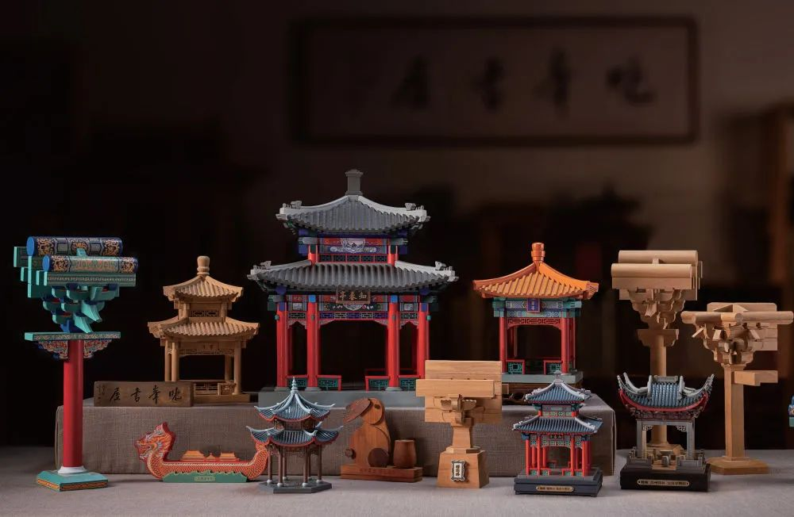
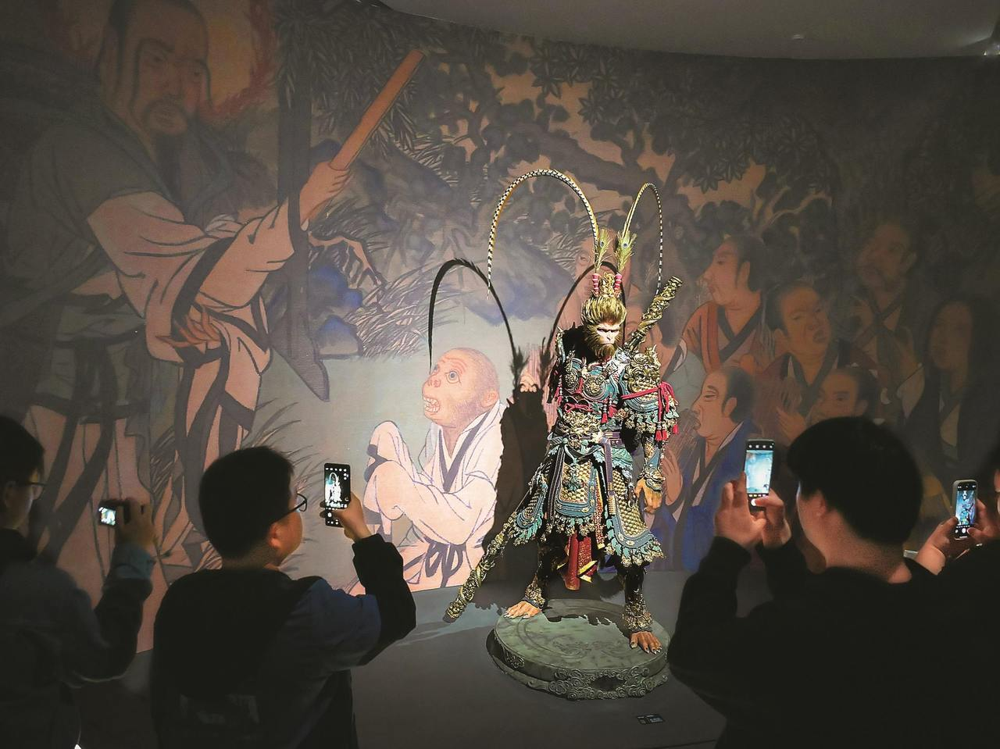

案例一：中国非遗博物馆
国家级平台构建非遗数字底座
中国非物质文化遗产博物馆是国家级的非遗综合性展示殿堂，其数字化建设堪称非遗线上保护的典范。馆内利用**全息投影、数字互动屏、沉浸式展厅**等现代技术，将全国各地区、各门类的9000余项非遗资源进行系统化梳理。观众在线上即可通过3D建模欣赏昆曲唱腔、皮影动态表演、传统刺绣纹理等细节，打破了实体展馆的时空限制。这种国家级数字化集群模式，为非遗的系统性保护、研究与传播提供了坚实的数字基础，真正实现了让非遗文化触达更广泛的人群。

案例二：剪纸传承人刘文辉
传统匠人的现代转型之路
国家级非遗项目蔚县剪纸代表性传承人**刘文辉**先生，是传统工艺与现代文创结合的典范。他扎根传统，不仅保留了蔚县剪纸“阴刻为主、阳刻为辅”的核心技法，更敏锐地捕捉现代市场需求。他带领团队将剪纸元素与台灯、书签、服饰配件等日用品融合，并通过抖音、小红书等社交平台直播展示创作过程，将非遗文化以更轻盈、时尚的形态推向年轻市场。刘文辉的事迹证明，非遗传承不一定是守旧，而是通过**设计赋能与品牌化运作**，让老手艺在新时代获得新的生命力与经济效益。

案例三：《黑神话：悟空》与非遗文旅
超级IP引爆传统文化旅游热潮
现象级游戏《黑神话：悟空》的爆火，为非遗与文旅的融合提供了极具参考价值的范本。游戏中高度还原的山西古建筑、传统戏曲唱腔、皮影戏质感等元素，瞬间点燃了玩家的“打卡热”。各地景区顺势推出**“黑神话主题研学游”**，游客不仅能实地游览游戏取景地，还能体验非遗皮影制作、学习传统戏曲唱段、参与传统兵器文化讲解。这种模式借助**超级IP的流量势能**，将非遗文化从静态的“展品”变为动态的“体验内容”，极大地拉动了地方文旅经济，实现了传统文化与现代娱乐产业的成功共振。